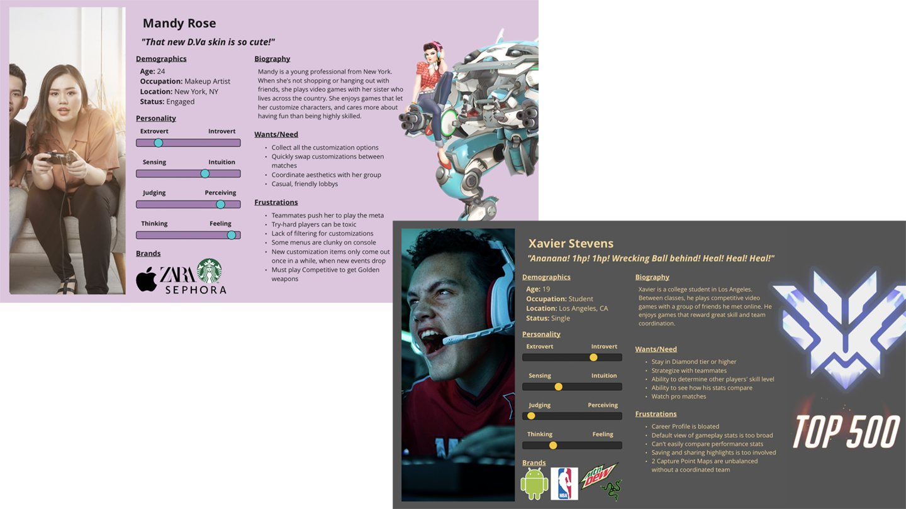
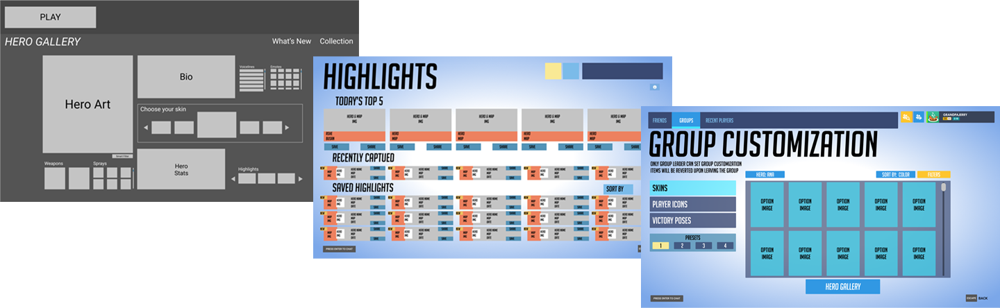

Keeping Up with Modern Gaming Trends
April 2021
Team:
Leonardo Canchola
Nick So
Sarah Whang
Tools:
Miro
Figma
Trello
Google Drive
Zoom
Time Frame:
2 Weeks
My Role:
- Project Management:
Task Assignment & Tracking - UX Research:
Interview Plan & Survey Questions
Affinity Diagram
User Personas
Definitions - UX Design:
User Flows
Sitemap
Wireframes
Final Prototype
Full
Project Leave-Behind
Overview
Problem
Overwatch is over 5 years old, and its age is beginning to show - especially when compared with other competitive multiplayer games.
- Menu navigation has a lot of friction
- Information is spread out and takes effort to find
- Changing character aesthetics is an involved process
Goal
Update the game's menus to give players more agency and keep the game feeling fresh.
- Streamline menu navigation
- Consolidate information in fewer, more obvious places
- Give players more ways to quickly change character appearances
User Research
Research Plan
Interviews
- Casual Overwatch Players
- Competitive Overwatch Players
- Gamers who enjoy online multiplayer games
Survey
for Quantitative DataInsights
- Most users are casual players, but they also care about performing well
- Most casual players enjoy the game with friends and want a way to coordinate their team aesthetic
- Hardcore competitive players generally care less about character aesthetics
- Players want an easier/quicker way to share gameplay highlights
- The "Hero Gallery" menu is the most in need of an update
Personas
User Personas represent the two most common user types based on the research insights.
Mandy is a young woman who plays casually with her sister. She cares mostly about having fun and making her characters look good.
Xavier is a college student who plays competitively. He cares most about his gameplay stats and showing off his skills.
Prototyping and Iteration
Wireframing
Early designs explored ways to increase information and deliver the most-requested features to players.
- Initial ideation pulled inspiration from popular PC games, like League of Legends. However, it quickly became apparent that such designs would not work for Overwatch which is available on consoles as well
- Recreating menus from the ground up was a poor use of time. Using screenshots as the base canvas and making adjustments with image-editing tools was more efficient and effective
- The "Group Customization" screen was completely new, so the components were made to match the existing aesthetic
Hi-Fidelity Prototype
More user testing was employed to ensure the design was clear and intuitive, even for new players.

The "Hero Gallery" screen underwent multiple iterations to give players more information and agency in regards to their character's appearance. The final design incorporates multiple quality-of-life improvements:
- "New!" section to show most recent unlocks
- Loadout Presets to allow users to quickly swap their gear
- Item Previews to show users what an item will look like before it's equipped
- Item Favorites so players can mark their favorite items and find them quickly
- Background Select to allow players to change the background image, so they can coordinate their look based on the map
The Final Prototype
Conclusion
Reflection
Overwatch's menus are clean and minimal, but perhaps too much so. The current design introduces moments of friction and lacks information in service of the menus' minimalist appearance. Modern gamers are accustomed to having more control and information at their fingertips, and the lack of that agency makes the game feel a bit dated. By refreshing the menu UX with quality-of-life improvements, we can quickly, easily, and inexpensively breathe fresh life into the game.
Direction
Next Steps:
- More testing!
- Refine information presented based on user feedback and desires
- Test our designs on a console input (controller) to ensure compatibility
- Give players even more control and expand the flow for sharing Gameplay Highlights